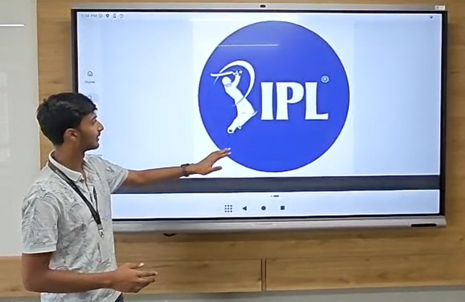
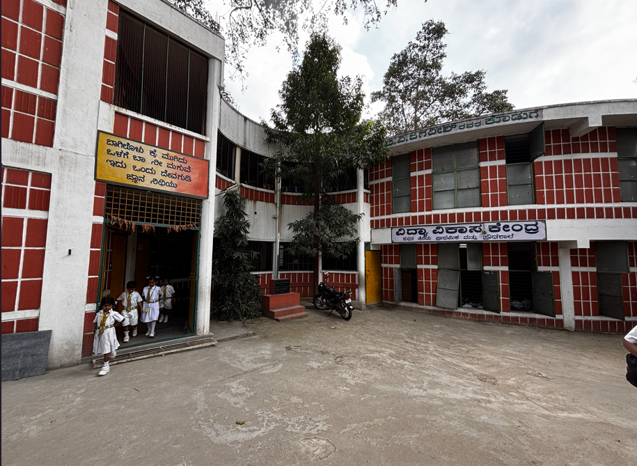
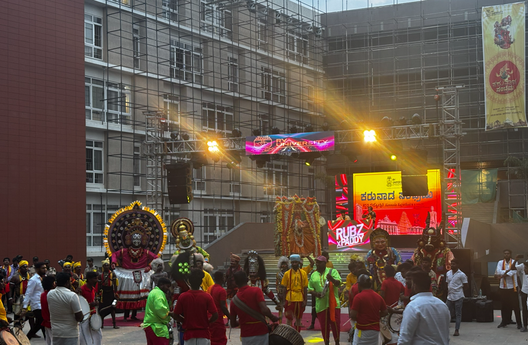

Welcome to My Portfolio
Agney HS
I am a BCA(H) student at RV University, interested in technology, communication and learning new skills.
BCA(H) Student RV University Semester 3My Self-Introduction Video
If the video does not play directly, click here to open the video in a new tab.
About Me
My name is Agney HS, and I am pursuing a Bachelor of Computer Applications (BCA(H)) at RV University. I am interested in technology and learning how computers and software can solve real-world problems.
During my academic journey, I have learned programming languages such as C, Python and Java. I have also studied data structures, databases, web design, computer networks and operating systems.
Apart from technical knowledge, I believe communication, teamwork and presentation skills are important for personal and professional growth. I enjoy learning new concepts and improving my skills.
My goal is to gain practical knowledge, become a confident communicator and build a successful career in the technology field.
My Academic Journey
Semester 1 Subjects
- Elements of Linear Algebra
- Programming with C
- Web and UX Design
- Digital Logic
- Linux and Shell Programming
- Structured Innovation with Design Thinking
- Universal Human Values
Semester 2 Subjects
- Set Theory
- Python Programming for Data Analytics
- Data Structures Using C
- Operating Systems
- Computer Organization
- English Communication
- Entrepreneurial Mindset
- Introduction to Version Control
Semester 3 Subjects
- Numerical Methods
- Object Oriented Programming with Java
- Database Management Systems
- Computer Networks
- Yoga and Well Being
Minor Subjects
- Minor 1: Basis of Business
- Minor 2: Business Communication
University Elective
- Entrepreneurial Finance and Funding Strategies
SB1022 – Business Communication
Business Communication helps me develop professional communication skills for academic and workplace situations.
Module 1: Communication, Types and Barriers
I learned the communication process, different types of communication and barriers that can cause misunderstanding.
Module 2: Non-Verbal Communication
I learned about body language, eye contact, facial expressions, gestures and posture.
Module 3: Business Writing
I learned how to write professional emails, messages and memos using proper formats.
Module 4: Business Reports
I learned how to prepare organised reports using headings, facts and recommendations.
Module 5: Debates and Discussions
I learned to express opinions, listen to others and participate respectfully in discussions.
Module 6: Business Presentations
I learned how to organise presentation content, speak clearly and maintain eye contact.
Professional Vocabulary
- Clarity: I use clarity when explaining my ideas.
- Concise: I keep my emails concise and meaningful.
- Collaboration: Collaboration helps our team complete tasks.
- Feedback: I use feedback to improve my presentations.
- Persuade: I use facts to persuade my audience.
Assignments and Activities
Group 2 – CIE 4 Startup Project (SkillBridge): Explore our complete business feasibility report, pitch presentation, video walkthrough, and interactive startup website prototype.
Open CIE 4 Assignment Deliverables (4 Files)Recommended Videos and TED Talk
Video 1
My Takeaway: Effective communication requires clear messages and careful listening.
Video 2
My Takeaway: Preparation and organising thoughts can help me communicate with confidence.
Video 4
My Takeaway: Respectful communication and choosing suitable words are important.
TED Talk: How to Speak So That People Want to Listen
Speaker: Julian Treasure
My Takeaway: We should speak honestly and kindly and use our voice thoughtfully.
My Blog
My Learning Journey as a BCA(H) Student
My BCA(H) journey has helped me understand programming, databases, web design and problem-solving. Every semester introduces new concepts and practical activities.
I have also understood that communication and teamwork are important along with technical knowledge. I want to continue learning and improving my skills.
My Gallery
Some memorable experiences and activities from my college life.

Classroom Presentation
I gave a presentation about the Indian Premier League (IPL), sharing information and ideas with my classmates. This experience helped me improve my public speaking and presentation skills.

Universal Human Values – School Visit
As part of our Universal Human Values course, we visited a school and interacted with the students. It was a meaningful experience that helped us understand kindness, respect and sharing.

College Events and Activities
This photograph captures one of the different events held at our college. Participating in college events gives me opportunities to enjoy campus life, meet people and learn beyond class.
Contact Me
Name: Agney HS
College: RV University
Course: BCA(H)
College Email: agneyrvu@rvu.edu.in
LinkedIn: linkedin.com/in/agney-hs-41044b44b
Instagram: Add your Instagram profile link